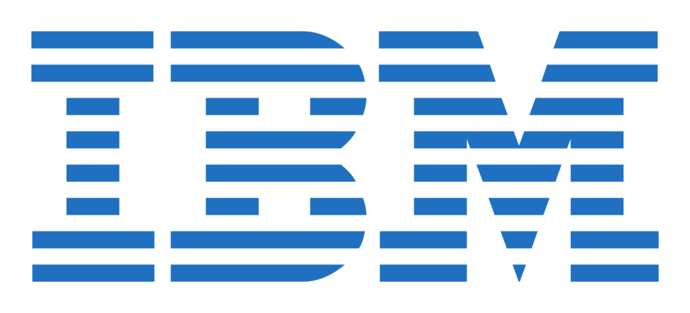

IBM: Data Science Professional Certification Go To Repository
 
INSTRUCTORS
Instructors: Rav Ahuja, Alex Aklson, Aije Egwaikhide, Svetlana Levitan, Romeo Kienzler, Polong Lin, Joseph Santarcangelo, Azim Hirjani, Hima Vasudevan, Saishruthi Swaminathan, Saeed Aghabozorgi, Yan Luo
This repository contains resources and solution of the quizzes given and asked in IBM Data Science Professional Certification.
Specialization Course Link: [https://www.coursera.org/professional-certificates/ibm-data-science]
There are 10 Courses in this Professional Certificate
The courses enlisted in this specialization are as follows:
-
What is Data Science? Go To Course
-
Tools for Data Science Go To Course
-
Data Science Methodology Go To Course
-
Python for Data Science, AI & Development Go To Course
-
Python Project for Data Science Go To Course
-
Databases and SQL for Data Science with Python Go To Course
-
Data Analysis with Python Go To Course
-
Data Visualization with Python Go To Course
-
Machine Learning with Python Go To Course
-
Applied Data Science Capstone Go To Course
The course is a paid Course but if you can’t afford that, then there is Finacial Aid option You can apply for that by answering some questions
Check this answers so you will get a rough idea : Financial Aid Answers